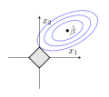
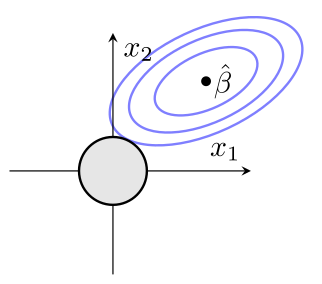
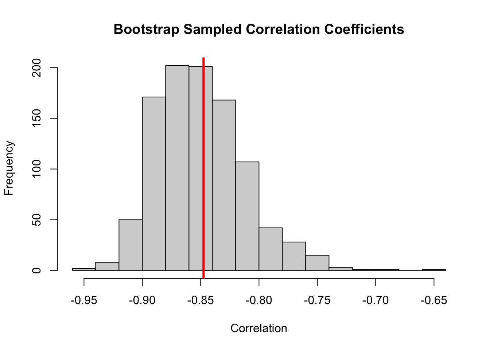
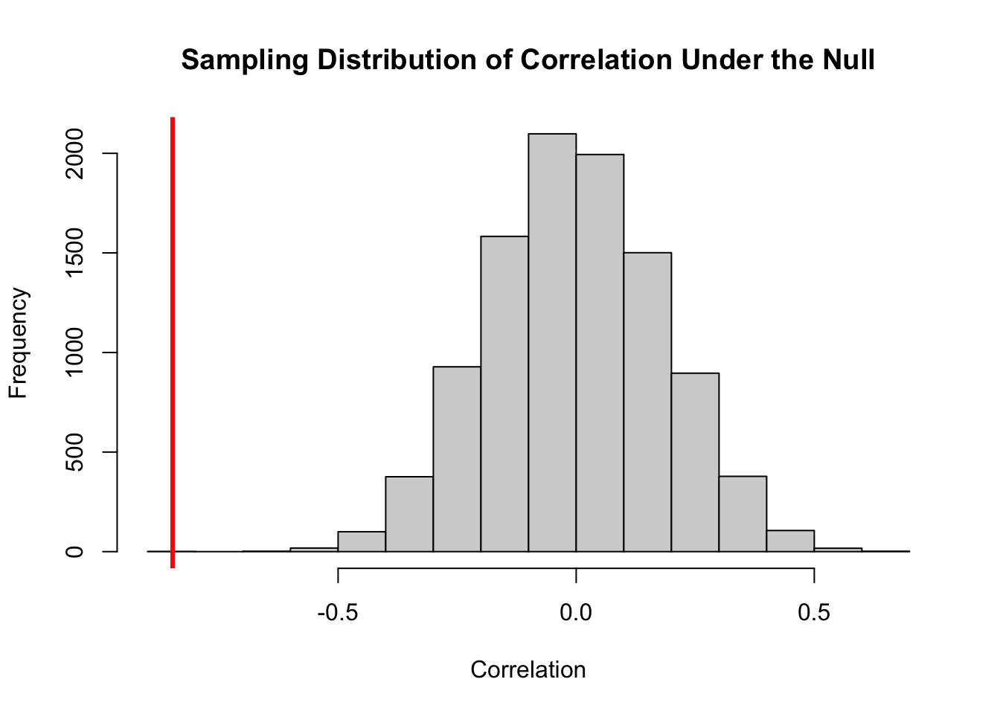

# example code for bootstrapping
## data frame with observed data is called obsdata
## B=number of bootstrap samples
B <- 2000
## matrix to store beta_0* and beta_1*
boot.beta <- matrix(NA,nrow=B,ncol=2)
for(b in 1:B){
## vector of indices for bootstrap sample b
boot.ind <- sample(1:nrow(obsdata), nrow(obsdata), replace = TRUE)
## bootstrap sample b
data_b<-obsdata[boot.ind,]
## fitted model on sample b
boot.reg <-lm(y ~ x,data=data_b)
## save beta_0* and beta_1*
boot.beta[b,] <- coef(boot.reg)
}
## histogram of bootstrap sampling distribution of beta_1
hist(boot.beta[,2])Week 6
Recap of Ridge and LASSO Regression
In ridge regression, we minimize the SSE subject to the constraint: \(\sum_{i=1}^p \beta_j^2 \leq s\).
\[ \min_{\beta} \left\{ \sum_{i=1}^n \left( y_i - \beta_0 - \sum_{j=1}^p \beta_j x_{ij} \right) \right\} \quad \text{ subject to } \quad \sum_{i=1}^p \beta_j^2 \leq s. \]
Or equivalently:
\[ \sum_{i=1}^n \left( y_i - \beta_0 - \sum_{j=1}^p \beta_j x_{ij} \right) - \lambda \sum_{j=1}^p \beta_j^2, \]
where \(\lambda > 0\) is a tuning parameter.
And in LASSO, we minimize SSE subject to the constraint: \(\sum_{j=1}^p |\beta_j|.\)
\[ \left\{ \sum_{i=1}^n \left( y_i - \beta_0 - \sum_{j=1}^p \beta_j x_{ij} \right) \right\} \quad \text{ subject to } \quad \sum_{i=1}^p |\beta_j| \leq s \]


The above are quite popular figures shown in many textbooks, though some can find it confusing to look at a 3D figure that is shown in 2D with level-sets (the ellipsoidal contours). Instead, one could look at the situation in 3D directly:


Recap of Content
Canonical model specification, best practices
Estimation of parameters
How to do inference
Assumptions and diagnosing assumption violations
How to identify outliers/influential points
How to do model selection or decide what predictors should go in the model
Penalized regression frameworks as an alternative when OLS is high-variance
Next up we’ll be working on “robustify”-ing estimation and inference.
Bootstrap
Bootstrap was first introduced by Bradley Efron (Stanford) through a series of papers in the late 1970s/early 1980s. https://www.jstor.org/stable/3182845
The bootstrap procedure is quite flexible and enables inference in a wide variety of settings besides linear regression.
Let our observed data be denoted \(\pmb d = \{ d_1, …, d_n \}\) generated by some unknown true probability distribution \(F\). In linear regression, generally \(d_i = (y_i, x_i)\).
We are interested in some parameter \(\theta\) that characterizes \(F\). To infer about \(\theta\), we calculate an estimate \(\hat \theta = s(\pmb d)\) and its sampling distribution. (Recall that the sampling distribution of a statistic is its distribution under repeated random samples from the population.)
In summary our inferential procedure follows the order
\[ F \longrightarrow \pmb d \longrightarrow s(\pmb d) \]
Inference is obtained using the sampling distribution of \(\hat \theta\) under \(F\). We rely on it to get quantities such as \(\sigma^2(\hat \theta)\) that are needed to create confidence intervals or conduct hypothesis tests.
However, there are a lot of settings in which we may not be able to derive the distribution of \(\hat \theta\).
The basic idea behind the bootstrap is to generate an estimate of \(\hat F\) of \(F\) using the observed data, then use \(\hat F\) to get a sampling distribution for \(\hat \theta\).
The specific steps are as follows:
get an estimate of \(\hat F\) of \(F\) from the data (usually \(\hat F\) is the empirical distribution of the observed sample)
generate a collection of new samples \(\pmb d^*\) from \(\hat F\)
for each new sample, calculate \(\hat \theta^* = s(\pmb d^*)\)
treat the resulting collection of \(\hat \theta^*\) across the new samples as the sampling distribution of \(\hat \theta\).
Bootstrap Resampling
The most common bootstrap is the nonparametric bootstrap that takes as \(\hat F\) the empirical distribution of the observed data:
\[ P(D=d_i) = \frac{1}{n}, \quad i = 1,...,n. \]
The nonparametric bootstrap simulates datasets from \(\hat F\) by resampling the data independently with replacement.
The draws must be independent — each observation in your observed sample must have an equal chance of being selected.
The simulated samples must be of size \(n\).
Resampling must be done with replacement. If not, then every simulated sample of size \(n\) would be identical to the original sample.
This sampling procedure yields simulated samples with some units appearing more than once and others not appearing at all.
Suppose that all we had was four measurements of some value of interest \(Y\). Let \(y = (6,5,-5,3)\). If we construct \(B=100\) bootstrap datasets of size 4 we might obtain
\(y_1^* = (6,6,-5,5) \to \bar y_1^* = 3\)
\(y_2^* = (-5,-5,5,5) \to \bar y_2^* = 0\)
\(\vdots\)
and our estimate of the standard error of \(\bar y\) is
\[ \hat\sigma^2(\bar y) = \sqrt{\frac{\sum_{b=1}^B \bar y_b^* - \bar{\bar y}^*}{B-1}}, \]
where \(\bar{\bar y}^* = \sum_{b=1}^B \bar y_b^* / B\) is the mean of the sample means from the bootstrap sample.
A \(100(1-\alpha)\)% Percentile Bootstrap CI would be written
\[ (\theta_L, \theta_U) = \left( \hat \theta^{*(\alpha/2)}, \hat \theta^{*(1-\alpha/2)}\right) \]
where \(\hat \theta^{*(\alpha/2)}\) is the \(\alpha / 2\) percentile of the \(\hat \theta_b^*\) and likewise for \(\hat \theta^{*(1-\alpha/2)}\).
https://www.tidymodels.org/learn/statistics/bootstrap/
https://github.com/juliangehring/Bootstrap.jl
Least Median Squares
Robust Regression and the Bootstrap
The bootstrap is particularly useful in situations in which a tractable variance formula does not exist.
The following example illustrates this feature of the bootstrap, and at the same time introduces the concept of robust regression.
Efron and Tibshirani (1993, Section 9.7) presented data from a study in which 14 cell plates were exposed to different levels of radiation. The observed response (\(Y_i\)) was the proportion of cells surviving. They considered a quadratic model for dose on log(survival) with no intercept.
\[ \mathbb E[\log(y_i)] = \beta_1 \text{dose}_i + \beta_2 (\text{dose}_i)^2. \]
Least Median Squares
Some have proposed taking \(\hat \beta\) as those values of \(\beta\) that minimize the median squares \[ \text{median}(y_i - x_i' \beta)^2 \]
rather than the sum of squares (equivalently, the mean squares) as a method of estimation that is robust to a few outliers.
The thinking here is that one data point could strongly skew the mean square regression, whereas in order for the median to be skewed, half of the data would have to be skewed. The catch is that closed-form expressions for the variances of these estimators do not exist.
Thus we have to resort to the bootstrap.
This estimation procedure is implemented in the R function using the lqs function in the MASS package.
The boot package will typically be better to use in practice, but it’s pedagogial to see code for bootstrap at least once.
# bootstrap least median squares
n.obs <- length(cell.dat$surv)
n.boot <- 1000
cell.boot <- matrix(0,n.boot,2)
for (i in 1:n.boot){
indices <- sample(seq(1,n.obs),replace=T)
dose.boot <- cell.dat$dose[indices]
dose2.boot <- cell.dat$dose2[indices]
surv.boot <- cell.dat$surv[indices]
lqs.boot <- lqs(log(surv.boot) ~ -1 + dose.boot + dose2.boot)
cell.boot[i,] <- lqs.boot$coefficients
}
cell.boot
[1,] -0.7617464 -0.0159356057
[2,] -0.7365987 -0.0212861892
[3,] -0.6825786 -0.0004869362
[4,] -0.8802563 0.0092792576
[5,] -0.9102435 0.0156595076
...
[998,] -0.4492835 -0.0518516360
[999,] -0.4492835 -0.0518516360
[1000,] -2.1062588 0.1244223293
# bootstrap s.e. for beta1, beta2
apply(cell.boot,2,var)^.5
[1] 0.21247973 0.03355593
# boostrap CI for beta2
quantile(cell.boot[,2],c(.025,.975))
2.5% 97.5%
-0.07283067 0.03641855Bootstrapping is not Unique
There is usually more than one way to obtain \(\hat F\). For instance, one can generate bootstrap samples for regression by:
- resampling response-covariate pairs: sample \((y_i, x_i)\) with probability \(1/n\) (as we have done).
- which treats \(x_i\) as random
- doesn’t impose model assumptions.
- or one could resample \(\hat \epsilon_i\) with replacement from the original fit and generate resamples
\[ y_i^*(b) = x_i' \hat \beta + \hat \epsilon_i^*(b) \] * This maintains the distribution of the covariates in the sample * Can be more efficient than resampling pairs * May be more sensitive to model assumptions. * This can be more appropriate in scenarios where there is a complicated correlation structure, such as in longitudinal data.
Permutation Methods
Permutation-based analyses resemble the bootstrap in that they rely on resampling the observed data. Like the bootstrap, permutation methods are used to make inferences when standard assumptions do not hold (e.g., non-normality) or when complex designs are adopted.
We have seen that the bootstrap seeks to quantify the sampling distribution of some statistic. Permutation analyses typically seek to characterize the distribution of a statistic under the null. That is, they seek to break whatever structure might be present in the dataset to obtain test statistic values one might expect to see “purely by chance.”
It’s not a mistake that we didn’t do hypothesis testing during the bootstrap section above.
Two-Sample Problem for Population Means
Consider the two-sample test comparing the mean of the outcome in two groups.
Assume that the responses are normally distributed:
\[ Y_{1j} \sim \mathcal N(\mu_1, \sigma^2) \quad j = 1,..., n_1 \] \[ Y_{2k} \sim \mathcal N(\mu_2, \sigma^2) \quad k = 1, ..., n_2 \]
This assumption of normality ensures that the test statistic for this hypothesis has a t-distribution under the null hypothesis
\[ H_0 : \mu_1 = \mu_2 \]
This corresponds to the test statistic for \(H_0 : \beta_1 = 0\) in simple linear regression with a binary predictor.
T-test for difference in means
Let \(\bar{Y_{1\cdot}} = \frac{1}{n_1} \sum_{j=1}^{n_1} Y_{1j}\) and similarly for \(\bar{Y_{2\cdot}}\). Then the t-test statistic is
\[ T = \frac{\bar Y_{1 \cdot} - \bar{Y_{2 \cdot}}}{\sqrt{S_p^2}}, \]
where
\[ S_p^2 = \frac{(n_1 - 1)S_1^2 + (n_2-2)S_2^2}{n_1 + n_2 - 2} \]
Assuming \(T \sim t_{n_1 + n_2 - 2}\) under the null (follows from \(Y \sim \text{Normal}\)),
\[ P(\text{Rejecting } H_0 | H_0) = P(|T| \geq t(1-\alpha/2; n_1 + n_2 - 2) | H_0) = \alpha \]
If the distributional assumption holds, the actual probability of a Type I error is the chosen significance level \(\alpha\), typically \(\alpha = 0.05.\)
If the assumption that \(T \sim t_{n_1 + n_2 - 2}\) under \(H_0\) does not hold, the actual probability of a Type I error may not be equal to the pre-specified \(\alpha\). That is, we believe the probability of mistakenly detecting a difference in the population means is \(\alpha\), but in reality it could be either greater or less than \(\alpha\). Unfortunately when the data are non-normal, it is often too difficult to work out the true probability of a Type I error analytically.
We now consider permutational inference, which often has the advantage of providing “exact” tests, meaning the actual \(P(\text{Type I Error})\) is less than or equal to the nominal level (the \(\alpha\) level, usually .05).
Permutation Tests
- Enumerate all unique ways to sort the observations into groups of sizes \(n_1\) and \(n_2\) (e.g., all possible “permutations”).
- Calculate the test statistic that would result from each permutation. These are test statistics from datasets where we’ve intentionally “broken” any group structure in the data. This gives a distribution of test statistics under the null.
- If the test statistic from the observed data is extreme relative to this distribution, this provides evidence against the null.
- This approach uses the “permutation distribution” of the test statistic and avoids the assumption of normality (which results in the usual statistic having a t-distribution). It is valid regardless of the distribution underlying the data.
More formally, the steps to construct a permutation test are:
- Choose a test statistic, e.g., \(T\)
- Compute the value of the test statistic for the observed data. Call this value \(t^*\).
- List out all possible \({N \choose n_1}\) ways to assign \(n_1\) of the \(N\) observations to group 1.
- For each permutation, compute the value of the test statistic.
- The permutation p-value is given by the proportion of test statistics that are as, or more extreme (i.e. in favor of \(H_1\)) than the observed value \(t^*\).
We will see that this guarantees the actual \(P(\text{Type I error}) < \alpha\).
Our permutation test has been based on the test statistic \[ T = \frac{\bar Y_{1} - \bar Y_2}{\sqrt{S_p^2}}. \]
For all one-sided tests, all that matters is the ordering of the permutations induced by the statistic. Statistics that have the same ordering across permuted datasets yield the same permutation inference. In the differences in means context,
- \(T\)
- \(\bar Y_1 - \bar Y_2\)
- \(\sum_{j=1}^{n_1} Y_{1j}\)
all have the same ordering, so they yield the same inference.
One-sided p-value
\(H_0\) is given by the distribution of the outcome if two treatments are equal.
\(H_1\) is given by the scenario where the new treatment changes the outcome relative to the standard treatment.
The one-sided permutation \(p\)-value is the proportion of permutations that lead to statistics as or more extreme than \(t^*\) in the direction of \(H_1\):
\[ p = P(T \leq t^* | H_0) = \frac{1}{N \choose n_1} \sum_{i=1}^{N \choose n_1} I(t_i \leq t^*) \]
\(t_i\) is the value of \(T\) for the \(i\)th permutation and
\[ I(t_i \leq t^*) = \left\{ \begin{array}{ll} 1 \quad & t_i \leq t^* \\ 0 & \text{otherwise} \end{array} \right. \]
Similarly, for the two-sided test, we compute the permutation \(p\)-value as the proportion of test statistics as or more extreme than \(t^*\) but now on either end of the distribution.
We calculate the proportion of \(t_i\) that are at least as far away from \(\mathbb E(T)\) as the observed value \(t^*\):
\[ p = \frac{1}{N \choose n_1} \sum_{i=1}^{N \choose n_1} I(|t_i - \mathbb E(T)| \geq |t^* - \mathbb E(T)|) \]
Lab
Today we’ll be talking about the permutation test and the bootstrap.
Parametric vs. nonparametric methods:
- Parametric methods have a fixed set of learnable parameters
- While non-parametric methods have a flexible amount of parameters
What are the parametric assumptions of the linear regression model?
- \(\mathbb E Y = \beta_0 + \beta_1 x + ...\)
- and \(\varepsilon \sim \mathcal N(0, \sigma^2_{\varepsilon})\)
When assumptions get violated, the standard inferential methods are invalidated, such as the \(t\)-test or \(F\)-test.
Instead, we could use non-parametric assumptions.
How might we approximate a distribution if its true form is unknown? One could use the empirical distribution. This approach is generally called resampling.
Bootstrap
Bootstrapping is a technique for estimating the precision of a statistic, especially when the distribution of this statistic is not known (in most cases it is used when the statistic is not normal, and so the standard t-tests and normal theory cannot be applied). The basic idea is to:
- Given a dataset of size \(N\), sample \(N\) items with replacement. (This allows for duplicate items in the newly obtained sample).
- Calculate the statistic of interest (regression coefficients, correlation, median, etc.) using these \(N\) samples
- Repeat this procedure \(B\) times, resulting in \(B\) estimates of the statistic of interest
- This collection of \(B\) calculated values approximates the distribution of the statistic of interest. Therefore, the standard deviation can be used as an estimate of the standard error for the original estimate. The \(\alpha/2\) and \((1 - \alpha/2)\) empirical quantiles of this distribution can be used to construct a \((1-\alpha)\cdot 100\%\) confidence interval for the parameter of interest.
Suppose we wanted to bootstrap a correlation coefficient.
library(boot)
cor.boot <- function(df, ind) {
sampled_data <- df[ind,]
return(cor(sampled_data$mpg, sampled_data$disp))
}
boot.coef <- boot(1000, statistic = cor.boot, data = mtcars)
cor_estimate <- boot.coef$t0 # this is equal to cor(mtcars$mpg, mtcars$disp)
hist(boot.coef$t, main = "Bootstrap Sampled Correlation Coefficients", breaks = 20, xlab = 'Correlation')
abline(v = cor_estimate, col = 'red', lwd=3)
Two ways to calculate confidence intervals:
# using the t-distribution method:
se.boot <- sd(boot.coef$t)
t.025 <- qt(0.975, nrow(mtcars) - 2)
ci.lower <- cor_estimate - t.025 * se.boot
ci.upper <- cor_estimate + t.025 * se.boot
ci.boot.t <- c(lower = ci.lower, upper = ci.upper)
# note that here we used cor_estimate which was derived using the whole
# sample. why?
#
# because we're using bootstrap to derive less-biased information about
# the variance or standard error of our estimator.
#
# this is based on the fact that our point-estimate using the whole
# sample is still unbiased even if our errors are non-normal.
#
# it is also okay to use the average of the boostrap statistic here.
#
# I am wondering if we can think about the bootstrap as slightly
# robustifying the point-estimate, and therefore introducing bias.
# e.g., if one had an extreme outlier, many of the (re-)samples
# would leave that outlier out and we might get something that
# looks slightly more like the median regression.
#
# Approach 2: order-based
ci.lower <- quantile(boot.coef$t, 0.025)
ci.upper <- quantile(boot.coef$t, 0.975)
ci.boot.empirical <- c(lower = ci.lower, upper = ci.upper)
# Parametric approach
cor_test <- cor.test(mtcars$mpg, mtcars$disp)
rbind(ci.parametric = cor_test$conf.int, ci.boot.t, ci.boot.empirical) lower upper
ci.parametric -0.9233594 -0.7081376
ci.boot.t -0.9243671 -0.7707357
ci.boot.empirical -0.9110120 -0.7654728library(tidyverse)── Attaching core tidyverse packages ──────────────────────── tidyverse 2.0.0 ──
✔ dplyr 1.1.2 ✔ readr 2.1.4
✔ forcats 1.0.0 ✔ stringr 1.5.0
✔ ggplot2 3.4.2 ✔ tibble 3.2.1
✔ lubridate 1.9.2 ✔ tidyr 1.3.0
✔ purrr 1.0.1
── Conflicts ────────────────────────────────────────── tidyverse_conflicts() ──
✖ dplyr::filter() masks stats::filter()
✖ dplyr::lag() masks stats::lag()
ℹ Use the conflicted package (<http://conflicted.r-lib.org/>) to force all conflicts to become errorssummary(mtcars[,c('mpg','disp')]) mpg disp
Min. :10.40 Min. : 71.1
1st Qu.:15.43 1st Qu.:120.8
Median :19.20 Median :196.3
Mean :20.09 Mean :230.7
3rd Qu.:22.80 3rd Qu.:326.0
Max. :33.90 Max. :472.0 mtcars2 <- mtcars |>
select(mpg, disp) |>
bind_rows(c(mpg = 30, disp = 1000))
beta.boot <- function(df, ind) {
sampled_data <- df[ind,]
return(lm(mpg ~ disp, sampled_data)$coef[[2]])
}
boot.coef <- boot(1000, statistic = beta.boot, data = mtcars2)
# this is just the statistic applied to the original dataset:
boot.coef$t0[1] -0.01165093# which differs from the average of the statistic of each bootstrap
# dataset:
mean(boot.coef$t)[1] -0.01889185# and it does appear that this is biased in the direction of the
# least-median-squares regression
MASS::lmsreg(mpg ~ disp, mtcars2)$coef[[2]][1] -0.03277712# and without the high influence / problematic data-point:
lm(mpg ~ disp, mtcars)$coef[[2]][1] -0.04121512Permutation Tests
# Number of permutations
df <- mtcars
N <- nrow(df)
P = 10000
cor_estimate <- cor(mtcars$mpg, mtcars$disp)
# Initialize vector to contain correlation results from all permutations
# with first element: rho from observed dataset
r.star <- cor_estimate
r.perm <- r.star
for (i in 2:P) {
# Permute indices: obtain new ordering for the ith permutation
perm.inds <- sample(x=seq(1,N,by=1), size=N, replace=FALSE)
# New x (disp) vector from permutation i
disp.i <- df[perm.inds, 'disp']
# Obtain correlation coefficient b/w original y (mpg) vector on new x (disp) vector
r.i <- cor(df$mpg, disp.i)
# Add correlation coefficient to result vector
r.perm <- rbind(r.perm, r.i)
}
### Obtain Outputs ###
# P-value
pval <- sum(abs(r.perm) >= abs(r.star))/P
cat('p-value', pval)p-value 1e-04# Histogram - sampling distribution of null
# distribution of correlation coefficients
{
hist(r.perm, xlab = "Correlation", breaks = 20, main = "Sampling Distribution of Correlation Under the Null")
abline(v = cor_estimate, col = 'red', lwd = 3)
}
We can see that the bootstrap helps us see the distribution of our statistic under (weaker / nonparametric) assumptions, whereas the permutation test is showing us the distribution of our data under the null hypothesis (as in, no dependency among the variables).
In the permutation test, if one is interested in the null hypothesis for a specific coefficient, one needs to follow a careful procedure to create the null distribution for that variable only.
- Fit the full model to get the original statistic, the value to test.
- Fit \(Y \sim X_2, (..., X_p)\) and get \(\hat \varepsilon^*\). (Leave out \(X_1\).)
- Fit \(\hat \varepsilon^* \sim X_1\) and permute \(X_1\).
The idea is that there would be residual information explained by \(X_1\) in \(\hat \varepsilon^*\), and this permutation test would give us the null distribution for the coefficient on \(\beta_1\).